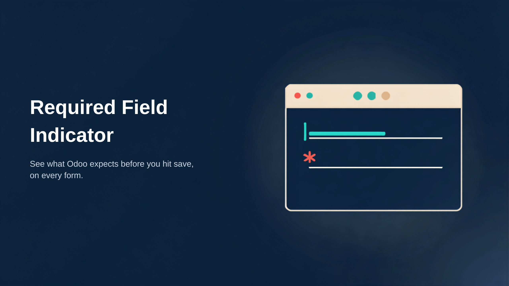
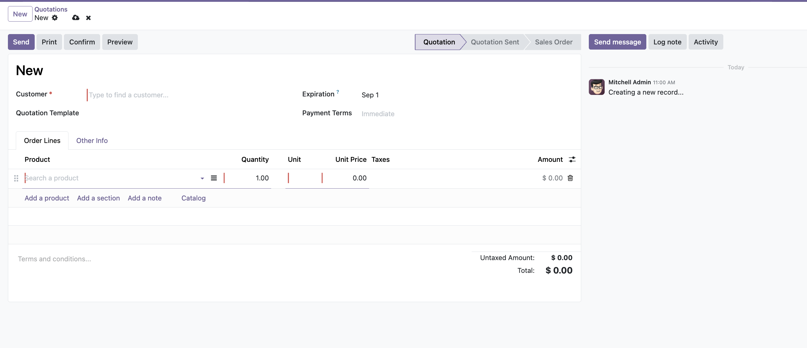

See what Odoo expects from you before you hit save. A clear red asterisk on every required field, on every form.

Odoo stopped marking required fields, so nobody knows a field was mandatory until they press Save. The save is refused, an error blocks the screen, and whoever just filled in a long form has to go hunting for the one field Odoo is complaining about. On a busy day that is time lost on every quotation, every contact and every product your team creates.
This app puts the indicator back. A red asterisk sits on the label of every required field from the moment the form opens, with a matching marker on the input box, so people fill the record correctly the first time instead of learning your forms by trial and error.
|
✱
Instant Red Asterisk
|
▮
Marked Input Box
|
↻
Follows Conditional Fields
|
|
⚡
Zero Configuration
|
🛡️
Safe by Design
|
Customer carries its asterisk and its marker from the moment the form opens, and the mandatory cells in the order line are marked the same way. The markers say what has to be filled in, not that anything is wrong, so your team knows where to go before they start.

| Availability | Odoo Online, Odoo.sh, On-Premise |
| Odoo Version | 19.0, Community & Enterprise |
| Dependencies | web |
| Technical Name | zen_required_fields |
| License | OPL-1 (Odoo Proprietary License v1.0) |
The re-work that happens after a rejected save. Today someone fills a long form, presses Save, gets blocked by a validation error and has to find the field Odoo wants. With the asterisks in place they see the mandatory fields before they start typing. Fewer failed saves, fewer half-finished records, and new staff learn your forms without being walked through them.
Yes. Every backend form gets the indicator automatically, whether it is a standard Odoo screen, a form added by another app from the Store, or one your team customised. There is nothing to switch on per screen, per field or per user, and nothing for anyone to configure after installation.
Not in this app. The free version shows a fixed red asterisk, which is the convention people already recognise from other business software. If you want the indicator to follow your own house style, Required Field Indicator: Pro adds a settings screen to choose the color, size and position, highlight fields while they are still empty, and mark required columns in list and order-line tables as well.
None. The app only changes how forms are displayed. It adds no fields, stores nothing in your database and never touches a record. If you uninstall it, every screen returns to standard Odoo exactly as it was.
Zenovaraa builds Odoo apps and implements Odoo for companies that want the system to fit the way they already work, rather than the other way round. We spend our days inside real Odoo databases, which is where apps like this one come from: a small friction someone hit on a Tuesday, fixed properly and packaged so nobody else has to hit it.
Every app we publish is written against a clean install of the Odoo version it targets, kept free of unnecessary dependencies, and documented so your team can read the code before trusting it. If you find a bug, tell us and we will fix it.
Odoo App DevelopmentPurpose-built modules for the gaps between what Odoo ships and what your business actually does. |
Implementation & MigrationGetting you onto Odoo, or onto a newer version of it, without losing the customisations you depend on. |
Support & CustomisationOngoing help with the apps we publish, plus custom work when an app needs to bend to your process. |
We stand by our code. Tell us what you are trying to do and we will tell you honestly whether this app covers it, what it would take to get there, or where a different approach would serve you better.